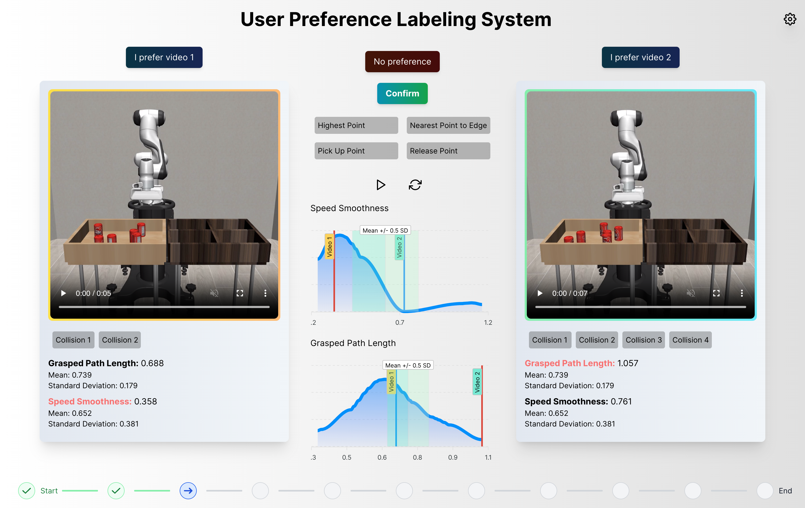

Abstract
Preference-based learning aims to align robot task objectives with human values. One of the most common methods to infer human preferences is by pairwise comparisons of robot task trajectories. Traditional comparison-based preference labeling systems seldom support labelers to digest and identify critical differences between complex trajectories recorded in videos. Our formative study (N = 12) suggests that individuals may overlook non-salient task features and establish biased preference criteria during their preference elicitation process because of partial observations. In addition, they may experience mental fatigue when given many pairs to compare, causing their label quality to deteriorate. To mitigate these issues, we propose FARPLS, a Feature-Augmented Robot trajectory Preference Labeling System. FARPLS highlights potential outliers in a wide variety of task features that matter to humans and extracts the corresponding video keyframes for easy review and comparison. It also dynamically adjusts the labeling order according to users’ familiarities, difficulties of the trajectory pair, and level of disagreements. At the same time, the system monitors labelers’ consistency and provides feedback on labeling progress to keep labelers engaged. A between-subjects study (N = 42, 105 pairs of robot pick-and-place trajectories per person) shows that FARPLS can help users establish preference criteria more easily and notice more relevant details in the presented trajectories than the conventional interface. FARPLS also improves labeling consistency and engagement, mitigating challenges in preference elicitation without raising cognitive loads significantly.
Arxiv Link: https://arxiv.org/abs/2403.06267
Collaborators
Hanfang Lyu, Yuanchen Bai, Xin Liang, Ujaan Das, Chuhan Shi, Leiliang Gong, Yingchi Li, Mingfei Sun, Ming Ge, Xiaojuan Ma